网络编程
基本概念扫盲
为什么需要计算机网络
如下图所示，A、B、C三个不同地域的主机要想进行通信不是凭空就可以通信的，而是需要基于互联网进行互相连接、通信。

为什么需要协议
如下图所示，红和蓝是联合攻打绿，它们以烽火为信号出动攻打绿，那么这时候就需要一个约定，比如红先点烽火，然后蓝看见了狼烟再点烽火，红看见了蓝的狼烟之后熄灭烽火，以此表示自己看见了，而蓝看见了红熄灭烽火之后也熄灭自己的烽火以此表示自己知道红看见了此信号，而后两人就需要再约定信号一起整顿出军以确保没有失误。

所以我们知道蓝和红之间的通信不能保证100%成功，但是要尽量保证没有失误的话就需要一遍又一遍的去确认，而这些一次又一次的确定就是双方定下的协议；由此我们可以清楚的认识到我们在网络通信中是必须要有协议的存在的。
为什么需要这么多协议
上文中我们举了两军协同作战，他们之间有个作战协议，而一旦作战成功，夺下对方城池那就需要另外一个瓜分战果的协议，所以每个不同的场景都会有对应的协议，这是有这么多协议的原因。
如下图所示，我们的计算机网络也有很多协议，下面是分为五层，如果你了解过计算机网络协议应该会知道七层模型、五层模型，但本章节不讲七层模型而是选择五层模型，因为七层模型是一种理想化的模型，实际应用我们用到的是五层模型。

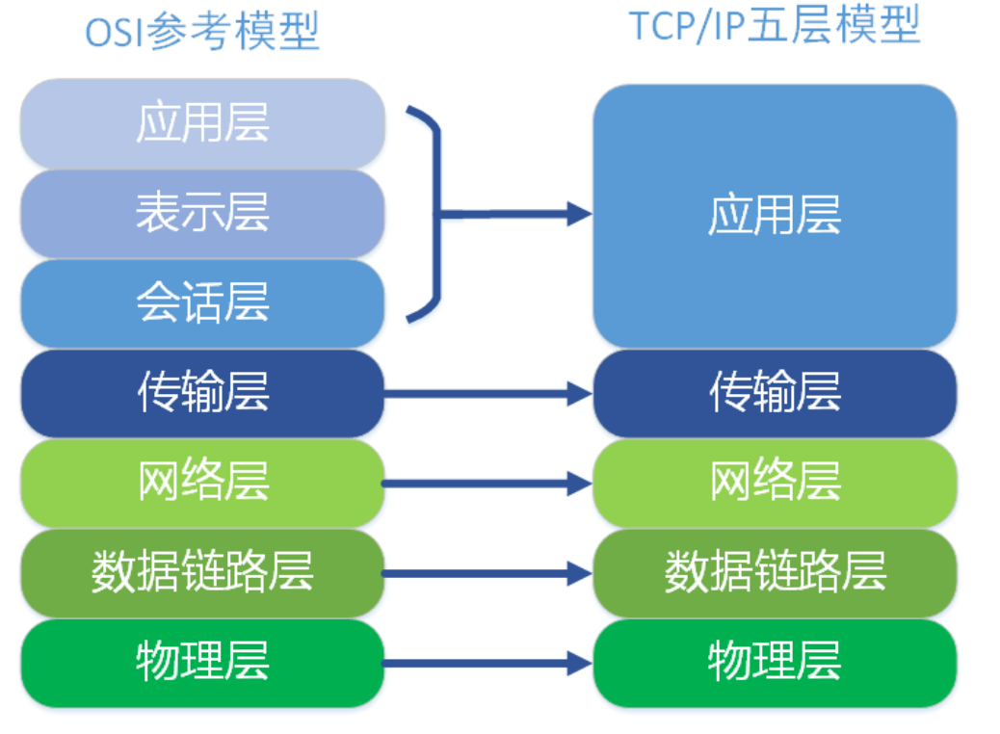
如何定位互联网上的终端
首先我们熟知的系统是通过线程ID、进程ID知道对应的线程和进程的，在每个国家公民都是有身份证号码的，这也用来定位你这个人；在互联网上同样也有这样一个标识去确认终端，这就是IP地址。
IP地址以"."符号分割，一共有四组，例如：120.120.120.120，每一组都是的区间都是0到255，IP地址的组成是网络号加上主机号，而具体的界定我们可以查看下文。
IP地址分为5类，其分别如下所示：
|
类型 |
起始地址 |
结束地址 |
|
A类 |
0.0.0.0 |
127.255.255.255 |
|
B类 |
128.0.0.0 |
191.255.255.255 |
|
C类 |
192.0.0.0 |
223.255.255.255 |
|
D类 |
224.0.0.0 |
239.255.255.255 |
|
E类 |
240.0.0.0 |
247.255.255.255 |
我们不需要死记硬背，需要的时候自己查下就可以，具体含义网上很多，这里不过多赘述。

如何区分出网络号、主机号
如上图中我们可以知道IP地址分成了网络号和主机号两部分，通过子网掩码可以从IP地址中区分出网络号，其运算规则是：网络号 = IP地址 &(按位与) 子网掩码。
我们查看自己本机的IP地址和子网掩码来计算：

IP地址：192.168.8.117，子网掩码：255.255.255.0，将这两个转为二进制则为：
11000000.10101000.00001000.0111010111111111.11111111.11111111.00000000我们进行按位与运算，结果就是：
11000000.10101000.00001000.00000000C0.A8.08.00192.168.8.0那么在这里192.168.8.0就是其网络号，同样我们可以根据子网掩码来获取主机号，其运算规则是：主机号 = IP地址 &(按位与) ~(取反)子网掩码。
~ 11111111.11111111.11111111.00000000 // 取反子网掩码 00000000.00000000.00000000.11111111& 11000000.10101000.00001000.01110101 // 按位与 00000000.00000000.00000000.01110101Dec -> 0.0.0.117 // 十进制结果最终结果我们知道了其主机号为0.0.0.117。
子网掩码本质上是32位的二进制，只不过是为了看着直观一些就转为了十进制，子网掩码1所对应的位为网络号位而0所对应的位为主机号位，其用来区分有几个子网，例如这里我们的255.255.255.0，转为二进制实际上前24位是网络位，后8位是主机位，那也就表示我们只有一个子网，在这里我们的子网地址范围就是：192.168.8.0-192.168.8.255，可用的主机号计算公式就是2的8（主机位）次方-2，这里结果也就是254，为什么我们还需要减去2，这是因为根据计算方法，192.168.8.0就是网络号（代表当前网络），同时根据定义，主机号位全为1的地址为此网段的广播地址，此时的广播地址为192.168.8.255，去掉网络地址和广播地址，也就是254个主机号可用。
而如果我们的子网掩码为255.255.255.192，转为二进制就是11111111.11111111.11111111.11000000，可以看见其在我们的原先的后8位主机位中占用了2位作为网络位，现在有26个1，那么根据二进制非0即1，其表现方式就有11000000、10000000、00000000、01000000，也就是说我们将原有的192.168.8.0这个网络分成了四份，即4个子网，也可以理解为这里就是2的2（后8位主机位中占用了2位）次方，现在我们将它们转换成10进制就分别是0、64、128、192，那么这4段网络的范围如下所示：
192.168.8.0 - 192.168.8.63192.168.8.64 - 192.168.8.127192.168.8.128 - 192.168.8.191192.168.8.192 - 192.168.8.255端口号是什么
问题：系统中有很多个进程连着网，比如QQ、微信、迅雷...那么系统是如何区分出数据包应该分给哪个进程呢？
答案：系统是根据端口号来区分出数据包应该分给哪个进程，每个联网的进程都会分配一个系统唯一的ID，发送数据包的时候这个ID也会放进去，接受数据包的时候就可以根据这个ID来分别出对应进程，这个ID也就是端口号。
注意：端口号的范围就是0-65535
网关是什么
如下图所示，路由器就是一个网关，网关就相当于是网络的一扇门，关内是一个网络，A、B、C、D都可以在这个网内进行通信，就不需要网关了，而如果A想跟E进行通信就需要通过网关将你的请求转发去通信，这是因为E不在关内。

DNS是什么
假设你访问的是www.baidu.com，这是一个域名，但是这个域名你想要去访问到真正的那些展示给你的资源其背后对应的正是某个服务器的IP，根据这个IP和对应的端口你才可以访问到资源，而将域名和IP进行关联的正是DNS。
DNS服务器通过记录域名和IP的关联，当你想要去访问某个域名的时候，就需要给DNS服务器发送请求，而后DNS服务器接收到你的请求，将请求中想要查询的域名在DNS服务器本身的记录中去搜索找到对应的IP，最后返回给你。

TCP客户端和服务器端编程架构
什么是TCP
TCP，英文全称是Transmission Control Protocol，中文为传输控制协议，在我们之前所说的五层还是七层模型中，TCP都属于传输层。
如下图所示，A和B基于TCP协议进行传输控制，该协议可以控制协议传输或者说保证传输过程中的数据是正确的：

面向连接
之前我们说到TCP协议可以保证传输过程中的数据是正确的，这是因为其是面向连接的网络协议。
如下图所示，客户端和服务器端基于TCP进行传输通信，首先客户端要跟服务器端说（发送请求）我要跟你进行连接，其次服务器端要回应（发送请求）允许客户端进行连接，而后客户端才会在发送一个请求正式连接，这就是三次握手的特点。

当客户端和服务器端连起来之后，才是会进入传输。
服务器端编程框架
了解了理论之后就要付诸于行动，在编程的时候我们的服务器端要有七个步骤去完成：
1. 创建套接字2. 绑定套接字3. 监听套接字4. 等待连接5. 收发数据6. 断开连接(被动)7. 关闭套接字这时候就有一个新的东西，就是套接字，这是系统给你打包好的，你可以理解这是网络通信过程中端点的抽象表示，而想要客户端去连接服务器端，就需要一对套接字，一个运行在服务器端，一个运行在客户端；如果概念无法很清晰的去了解，没关系，在实际编程中你就会有所体会。
按顺序编写代码
首先我们创建一个Win32控制台应用的项目，其次在头部包含文件和调用lib：
#include <WINSOCK2.H>#pragma comment(lib, "ws2_32.lib")接着我们就需要按照顺序去编写代码，首先第一步是创建套接字，这个需要用到一个函数socket，其语法如下：
SOCKET socket( int af, // 地址族规范：常见有IPv6（AF_INET6）或IPv4（AF_INET） int type, // 套接字类型：原始套接字SOCKET_RAW（对较低层次的协议直接访问，例如IP、ICMP协议）、SOCK_STREAM面向连接（TCP/IP协议）、SOCK_DGRAM面向无连接（UDP协议） int protocol // 使用的协议：这里我们可以直接写0，这样操作系统就会根据前面两个选项推断出你想用的协议);// 实现代码SOCKET sSocket = socket(AF_INET, SOCK_STREAM, 0);接下来我们的就需要绑定套接字，使用函数bind，其语法如下：
int bind( SOCKET s, // 套接字：将创建的套接字变量名字写上去 const struct sockaddr FAR *name, // 网络地址信息：包含通信所需要的相关信息，传递的应该是一个sockaddr结构体，在具体传参的时候，会用该结构体的变体sockaddr_in形式去初始化相关字段 int namelen // sockaddr_in结构体的长度);sockaddr_in结构体的定义如下：
/* * Socket address, internet style. */struct sockaddr_in { short sin_family; // 地址族规范：与创建套接字时候所使用的一致即可 u_short sin_port; // 端口 struct in_addr sin_addr; // IP地址 char sin_zero[8]; // 无特殊的含义，只是为了与sockaddr结构体一致，因为在给套接字分配网络地址的时候会调用bind函数，其中的参数会把sockaddr_in结构体转化为sockaddr结构体};我们只需要关注前三个成员即可，最后一个不用管，可以看见IP地址又是一个结构体，我们接着看看in_addr结构体：
/* * Internet address (old style... should be updated) */struct in_addr { union { struct { u_char s_b1,s_b2,s_b3,s_b4; } S_un_b; struct { u_short s_w1,s_w2; } S_un_w; u_long S_addr; } S_un;#define s_addr S_un.S_addr /* can be used for most tcp & ip code */#define s_host S_un.S_un_b.s_b2 /* host on imp */#define s_net S_un.S_un_b.s_b1 /* network */#define s_imp S_un.S_un_w.s_w2 /* imp */#define s_impno S_un.S_un_b.s_b4 /* imp # */#define s_lh S_un.S_un_b.s_b3 /* logical host */};这个结构体里面又是一个联合体，联合体和结构体是差不多的，区别在于联合体用于覆盖使用而结构体是不覆盖使用；
并且我们通过代码可以看见这就是一个u_long类型的地址，我们可以使用函数inet_addr来按照网络字节序转换：
inet_addr("192.168.1.1");最终，我们在赋值的时候还是要选择某个成员去赋值，代码实现如下（需要注意的是，这里的IP地址是不可以乱写的需要通过命令行或其他方式获取本机的IP地址）：
sockaddr_in sockAddrInfo = {0}; // 初始化sockAddrInfo.sin_addr.S_un.S_addr = inet_addr("192.168.1.1"); // 地址sockAddrInfo.sin_port = htons(2118); // 端口需要按照网络字节序，所以需要使用htons函数sockAddrInfo.sin_family = AF_INET; // 地址族规范bind(sSocket, (sockaddr*)&sockAddrInfo, sizeof(sockAddrInfo));第三步就是监听套接字，使用函数listen，其语法如下：
int listen( SOCKET s, // 套接字：将创建的套接字变量名字写上去 int backlog // 待处理连接队列的最大长度：表示队列中最多同时有多少个连接请求);// 实现代码listen(sSocket, 1);第四步等待连接，使用函数accept，其语法如下：
SOCKET accept( SOCKET s, // 套接字：将创建的套接字变量名字写上去 struct sockaddr FAR *addr, // 输出参数，需要传入一个sockaddr结构体的地址 int FAR *addrlen // 输出参数，需要传入一个sockaddr结构体长度的地址);// 实现代码，accept返回的也是一个SOCKET，我们需要赋值一下sockaddr_in acceptSockAddrInfo = {0}; // 初始化int acceptSockAddrLen = 0;SOCKET aSocket = accept(sSocket, (sockaddr*)&acceptSockAddrInfo, &acceptSockAddrLen);第五步收发数据，首先我们看下收数据，使用到函数recv，其语法如下：
int recv( SOCKET s, // 套接字：将accept返回的套接字变量名字写上去 char FAR *buf, // 输出参数，数据缓冲区，接收到的数据 int len, // 缓冲区大小 int flags // 指定调用方式的标志，这个我们就直接写0即可);// 实现代码char buf[100] = {0};recv(aSocket, buf, 100, 0);printf("Recv data: %s\n", buf);接着我们看下发数据，使用函数send，其语法如下：
int send( SOCKET s, // 套接字：将accept返回的套接字变量名字写上去 const char FAR *buf, // 传输数据的缓冲区 int len, // 缓冲区大小 int flags // 指定调用方式的标志，这个我们就直接写0即可);// 实现代码send(aSocket, buf, strlen(buf)+1, 0);第六步断开连接，我们使用shutdown函数，其语法如下：
int shutdown( SOCKET s, // 套接字：将accept返回的套接字变量名字写上去 int how // 断开连接的形式：SD_SEND不再发送数据、SD_RECEIVE不再接受数据、SD_BOTH不再收发数据);// 实现代码shutdown(aSocket, SD_SEND);第七步也是最后一步，关闭套接字（这里有2个都要关闭），使用函数closesocket，其语法如下：
int closesocket( SOCKET s // 套接字：将accept返回的套接字变量名字写上去);// 实现代码closesocket(aSocket);closesocket(sSocket);这时候还没有结束，需要使用函数WSAStartup进行Winsock的初始化，其语法格式如下：
int WSAStartup( WORD wVersionRequested, // 版本号，指定所需的Windows Sockets版本，我们可以使用MAKEWORD去创建一个版本号 LPWSADATA lpWSAData // 指向WSADATA数据结构的指针，用于接收Windows Sockets实现的细节);实现代码如下：
WORD wsVersion = MAKEWORD(2, 2);WSADATA wsaData = {0};WSAStartup(wsVersion, &wsaData);最终我们实现了服务器端的功能，完整代码如下：
int main(int argc, char* argv[]){ // 0. 初始化 WORD wsVersion = MAKEWORD(2, 2); WSADATA wsaData = {0}; WSAStartup(wsVersion, &wsaData); // 1. 创建套接字 SOCKET sSocket = socket(AF_INET, SOCK_STREAM, 0); if (SOCKET_ERROR == sSocket) { printf("套接字闯创建失败!\n" ); } else { printf("套接字闯创建成功!\n" ); } // 2. 绑定套接字 sockaddr_in sockAddrInfo = {0}; // 初始化 sockAddrInfo.sin_addr.S_un.S_addr = inet_addr("172.16.176.5"); sockAddrInfo.sin_port = htons(2118); // 端口 sockAddrInfo.sin_family = AF_INET; // 地址族规范 int bRes = bind(sSocket, (sockaddr*)&sockAddrInfo, sizeof(sockAddrInfo)); if (SOCKET_ERROR == bRes) { printf("绑定失败!\n"); } else { printf("绑定成功!\n"); } // 3. 监听套接字 int lRes = listen(sSocket, 1); if (SOCKET_ERROR == lRes) { printf("监听失败!\n"); } else { printf("监听成功!\n"); } // 4. 等待连接 sockaddr_in acceptSockAddrInfo = {0}; // 初始化 int acceptSockAddrLen = sizeof(acceptSockAddrInfo); SOCKET aSocket = accept(sSocket, (sockaddr*)&acceptSockAddrInfo, &acceptSockAddrLen); if (INVALID_SOCKET == aSocket) { printf("服务端等待连接失败!\n"); } else { printf("服务端等待连接成功!\n"); } // 5. 收发数据 char buf[100] = {0}; // 循环 while (true) { int ret = recv(aSocket, buf, 100, 0); if (ret == 0) { // 如果recv返回为0则表示客户端要断开连接，就跳出循环断开连接 break; } printf("Recv data: %s\n", buf); send(aSocket, buf, strlen(buf)+1, 0); memset(buf, 0, 100); } // 6. 断开连接(被动) shutdown(aSocket, SD_SEND); // 7. 关闭套接字 closesocket(aSocket); closesocket(sSocket); WSACleanup(); return 0;}最后，如果你不使用了这个扩展就需要使用WSACleanup函数去终止使用；建议在实际编程过程中，应该将函数的返回值存储下来并做判断。
客户端编程框架
客户端编程框架的步骤就简单了一些，只有六个步骤：
1. 创建套接字2. 绑定套接字3. 连接服务器4. 收发数据5. 断开连接(主动)6. 关闭套接字了解了服务器端如何编写，客户端也就了如指掌的，实现代码如下：
int main(int argc, char* argv[]){ // 0. 初始化 WORD wsVersion = MAKEWORD(2, 2); WSADATA wsaData = {0}; WSAStartup(wsVersion, &wsaData); // 1. 创建套接字 SOCKET cSocket = socket(AF_INET, SOCK_STREAM, 0); if (SOCKET_ERROR == cSocket) { printf("套接字闯创建失败!\n"); } else { printf("套接字闯创建成功!\n"); } // 2. 绑定套接字 sockaddr_in sockAddrInfo = {0}; // 初始化 sockAddrInfo.sin_addr.S_un.S_addr = inet_addr("172.16.176.12"); sockAddrInfo.sin_port = htons(2119); // 端口 sockAddrInfo.sin_family = AF_INET; // 地址族规范 int bRes = bind(cSocket, (sockaddr*)&sockAddrInfo, sizeof(sockAddrInfo)); if (SOCKET_ERROR == bRes) { printf("绑定失败!\n"); } else { printf("绑定成功!\n"); } // 3. 连接服务器 sockaddr_in serverSockAddrInfo = {0}; // 初始化 serverSockAddrInfo.sin_addr.S_un.S_addr = inet_addr("172.16.176.5"); serverSockAddrInfo.sin_port = htons(2118); // 端口 serverSockAddrInfo.sin_family = AF_INET; // 地址族规范 int cRes = connect(cSocket, (sockaddr*)&serverSockAddrInfo, sizeof(serverSockAddrInfo)); if (SOCKET_ERROR == cRes) { printf("与服务器连接失败!\n"); } else { printf("与服务器连接成功!\n"); } // 4. 收发数据 printf("Input: "); char sendData[100]; scanf("%s", sendData); send(cSocket, sendData, strlen(sendData)+1, 0); char buf[100] = {0}; recv(cSocket, buf, 100, 0); printf("Recv data: %s \n", buf); // 5. 断开连接(主动) shutdown(cSocket, SD_SEND); // 6. 关闭套接字 closesocket(cSocket); WSACleanup(); return 0;}与服务器端不同的是，客户端需要连接服务器端，同样也是通过sockaddr_in结构体去指定服务器端的地址和端口，使用到了一个新的函数connect，该函数语法如下：
int connect( SOCKET s, // 套接字： const struct sockaddr FAR *name, // sockaddr 结构体 int namelen // 结构体长度);
需要补充的背景知识
补充的背景知识实际上是之前也了解过的存储数据的大、小端的存储模式，这里就不再过多赘述。
字节序: 字节与存储位置的关系小端: 将低序字节存储在起始地址大端: 将高序字节存储在起始地址网络字节序: 顾名思义就是网络上的字节序我们需要重点的是网络字节序，其顾名思义就是网络上的字节序，比如说一个数据在你电脑上存储的是小端存储，而可能在网络传输的时候就是大端模式，所以你就需要将你电脑上的存储的数据转换。
TCP三次握手与抓包分析
虽然我们已经了解过TCP三次握手的流程，但是里面具体的细节，我们并不了解，了解这些细节也有便于我们去深入了解TCP协议以及解决今后细节性的问题。
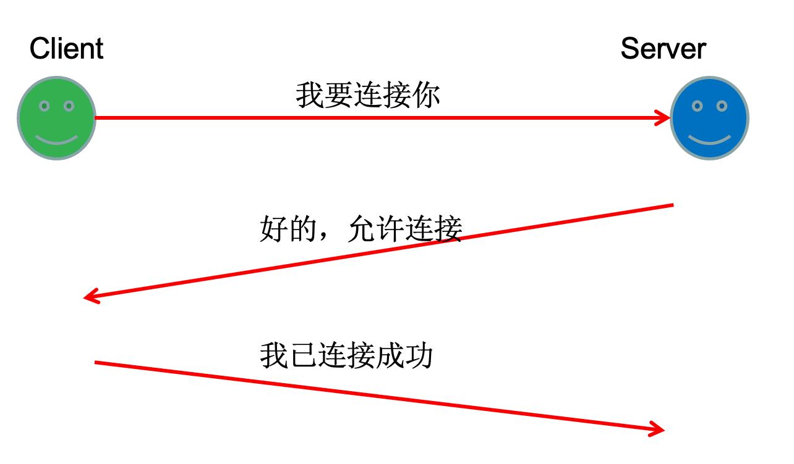
在这里，我们使用Wireshark这个抓包工具，下载地址：https://www.wireshark.org/
接下来我们使用两台机器作为服务器端和客户端，在客户端机器上安装Wireshark软件进行抓包，如下图（左服务器端，右客户端）：
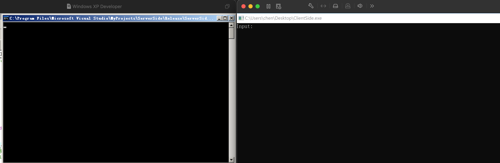
Wireshark直接抓网卡的流量即可，用过滤语法来过滤一下：(ip.dst==172.16.176.5 and tcp.port==2118) or (ip.src==172.16.176.5)，172.16.176.5地址为服务器端的IP地址，172.16.176.12地址为客户端的IP地址。
如下图所示，我们一共抓到了三个包， 这三个包就是我们所说的三次握手对应的包。
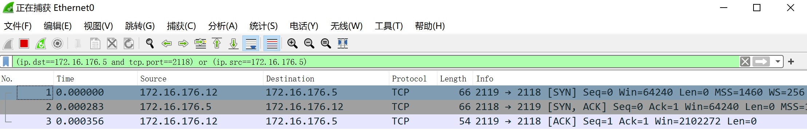
首先我们可以看到第一个包，就是客户端向服务器端发送SYN（同步序列编号）包，我们可以看见其有一个seq=0，这表示一个序号，是随机的；
接着服务器端响应该请求，返回了SYN+ACK（确认字符）包表示允许连接，同样也有一个seq=0，并且多出了一个ack=1，同样这里的seq是随机表示的，而ack则是由第一个包的seq=0这个值+1的结果；
最后客户端收到确认请求，回应服务器端的请求表示连接成功，发送了ACK包，seq我们就不用管了，这里ack的值也是第二个包的seq=0这个值+1的结果。
TCP四次握手与抓包分析
了解四次握手
之前我们所了解的三次握手，是在建立连接时的，而我们现在所需要了解的四次握手，则是在断开连接时的；你可以思考一下为什么在这里连接时需要三次握手，而在断开连接时，却需要四次握手呢？
我们可以看见如下图，假设服务器端和客户端是两个相亲相爱的恋人，客户端提出要跟服务器端分手，需要得到服务器端的确认，而不仅仅是单方面的分手，服务器端也要提出跟客户端分手，客户端也要确认。那么为什么需要这样呢？
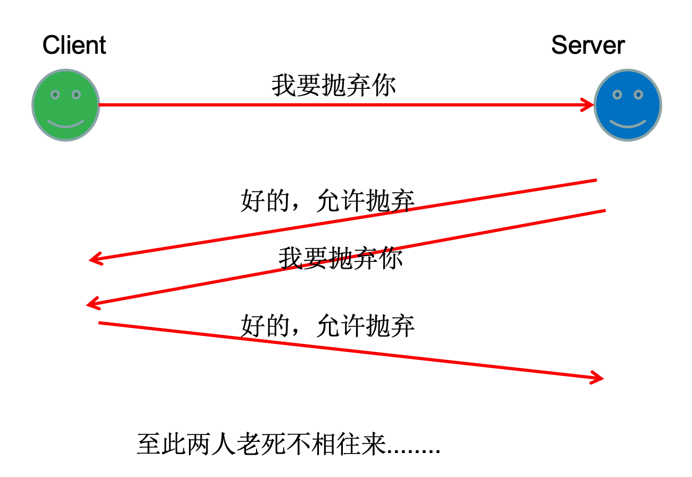
这时候我们需要了解通信中的三种通信模式：
单工：A和B进行通信，只能有一方发送，一方接收，只有一条通信线路；
双工：A和B进行通信，双方可以同时互相发送接收，有两条通信线路；
准双工：A和B进行通信，双方可以互相发送接收，但不可以同时进行，只有一条通信线路。
在互联网中采用了这种双工的通信模式，所以说当客户端给服务器端说要断开通信的时候，实际上只断开了一条通信线路，还有一条通信线路需要服务器端给客户端说要断开通信才会断开。
如下图所示，发送断开连接就是先发送FIN包，等待对方发送ACK包回应：

我们可以来看下TCP建立连接、通信、断开连接全貌：

抓包分析
在抓包之前，我们需要改一下服务器端的代码，在收发数据时，我们应该写一个死循环，然后判断recv函数的返回值是否为0，为0则表示客户端要断开连接，就跳出循环从而进入断开连接的代码：

最后，来使用Wireshark抓包测试一下看看这个全貌：
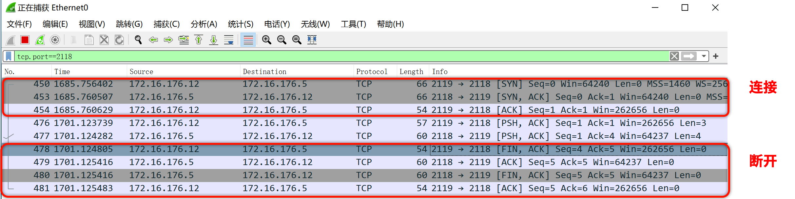
可以看见果然如我们所了解的在断开连接的时候发送了FIN以及ACK包，这里的seq的值和ack的值与我们之前所说的是一样的，seq是随机的，但ack的值是根据上一条的seq的值+1所得出来的。
UDP客户端和服务器端编程架构
什么是UDP
UDP是User Datagram Protocol的首字母简写，翻译过来就是标识用户数据报协议。UDP也是属于传输层的协议，从名字上来看，TCP是传输控制，而UDP是用户数据报，其实也就说明了UDP协议并不会去控制传输。
面向无连接
面向无连接，就是不用去询问服务器允不允许发送数据，他不管你怎么办，直接就给你发送数据了。

这样做的好处就是非常高效，但是却没办法保证数据是否正确地传递过去了。
服务器端编程框架
在UDP协议中服务器端和客户端的概念被弱化了，很难界定客户端与服务端，所以一般在UDP协议中，我们不以服务器端和客户端概念去做称谓，而是以端对端这种概念。
接着就是服务器端编程框架：
1. 创建套接字2. 绑定套接字3. 收发数据4. 关闭套接字实际代码如下：
int main(int argc, char* argv[]){ // 0. 初始化 WORD wsVersion = MAKEWORD(2, 2); WSADATA wsaData = {0}; WSAStartup(wsVersion, &wsaData); // 1. 创建套接字 SOCKET sSocket = socket(AF_INET, SOCK_DGRAM, 0); if (SOCKET_ERROR == sSocket) { printf("套接字闯创建失败!\n" ); } else { printf("套接字闯创建成功!\n" ); } // 2. 绑定套接字 sockaddr_in sockAddrInfo = {0}; // 初始化 sockAddrInfo.sin_addr.S_un.S_addr = inet_addr("172.16.176.5"); sockAddrInfo.sin_port = htons(2118); // 端口 sockAddrInfo.sin_family = AF_INET; // 地址族规范 int bRes = bind(sSocket, (sockaddr*)&sockAddrInfo, sizeof(sockAddrInfo)); if (SOCKET_ERROR == bRes) { printf("绑定失败!\n"); } else { printf("绑定成功!\n"); } // 3. 收发数据 char recvBuf[100] = {0}; while (true) { recvfrom(sSocket, recvBuf, 100, 0, NULL, NULL); if (strlen(recvBuf) != 0){ printf("Recv Data: %s \n", recvBuf); } memset(recvBuff, 0, 100); } // 4. 关闭套接字 closesocket(sSocket); WSACleanup(); return 0;}相比较TCP协议我们少了很多代码，并且在创建套接字的时候参数变成了SOCK_DGRAM，我们还需要了解一个新函数recvfrom，这个函数是用来收信息的，其语法如下：
int recvfrom( SOCKET s, // 套接字 char FAR* buf, // 输出参数，接收数据的缓冲区 int len, // 缓冲区长度 int flags, // 指定调用方式的标志，这个我们就直接写0即可 struct sockaddr FAR *from, // 输出参数（可选，我们可以直接写NULL），sockaddr结构体 int FAR *fromlen // 输入输出共用参数（可选，我们可以直接写NULL），sockaddr结构体的大小，注意这里需要传入实际的大小);客户端编程框架
了解了，服务端变成框架之后我们再来看客户端会发现，它的步骤更加简单：
1. 创建套接字2. 收发数据3. 关闭套接字实际代码如下：
int main(int argc, char* argv[]){ // 0. 初始化 WORD wsVersion = MAKEWORD(2, 2); WSADATA wsaData = {0}; WSAStartup(wsVersion, &wsaData); // 1. 创建套接字 SOCKET cSocket = socket(AF_INET, SOCK_DGRAM, 0); if (SOCKET_ERROR == cSocket) { printf("套接字闯创建失败!\n" ); } else { printf("套接字闯创建成功!\n" ); } // 2. 收发数据 printf("Input: "); char sendBuf[100] = {0}; scanf("%s", sendBuf); sockaddr_in sockAddrInfo = {0}; sockAddrInfo.sin_addr.S_un.S_addr = inet_addr("127.0.0.1"); sockAddrInfo.sin_port = htons(2118); sockAddrInfo.sin_family = AF_INET; sendto(cSocket, sendBuf, 100, 0, (sockaddr*)&sockAddrInfo, sizeof(sockAddrInfo)); // 3. 关闭套接字 closesocket(cSocket); WSACleanup(); return 0;}与服务端意义，这里有一个新函数sendto，其语法如下：
int sendto( SOCKET s, // 套接字 const char FAR *buf, // 发送的数据 int len, // 发送的数据长度 int flags, // 指定调用方式的标志，这个我们就直接写0即可 const struct sockaddr FAR *to, // sockaddr 结构体，表示发送数据给谁 int tolen // sockaddr 结构体长度);TCP和UDP的比较
如下就是TCP协议和UDP协议的优缺点，我们可以根据实际场景情况，并根据两个协议的优缺点去选择适合当前场景的协议。
|
协议 |
优点 |
缺点 |
|
TCP |
传输可靠 |
慢、低效、流程繁琐 |
|
UDP |
传输效率高 |
传输不可靠 |
实现端对端互相收发
我们已经知道了，在UDP中不存在客户端和服务端着两个概念，所有传输都是端对端的，不会区分，现在我们实现端对端互相收发数据，并且在发出或收到数据内容为close的时候关闭连接：
int main(int argc, char* argv[]){ // 0. 初始化 WORD wsVersion = MAKEWORD(2, 2); WSADATA wsaData = {0}; WSAStartup(wsVersion, &wsaData); // 1. 创建套接字 SOCKET cSocket = socket(AF_INET, SOCK_DGRAM, 0); if (SOCKET_ERROR == cSocket) { printf("套接字闯创建失败!\n" ); } else { printf("套接字闯创建成功!\n" ); } // 2. 绑定套接字 sockaddr_in sockAddrInfo = {0}; // 初始化 sockAddrInfo.sin_addr.S_un.S_addr = inet_addr("127.0.0.1"); sockAddrInfo.sin_port = htons(2119); // 端口 sockAddrInfo.sin_family = AF_INET; // 地址族规范 int bRes = bind(cSocket, (sockaddr*)&sockAddrInfo, sizeof(sockAddrInfo)); if (SOCKET_ERROR == bRes) { printf("绑定失败!\n"); } else { printf("绑定成功!\n"); } // 3. 收发数据 char recvBuf[100] = {0}; char sendBuf[100] = {0}; sockaddr sockclient = {0}; sockaddr_in sockAddrInfoS = {0}; sockAddrInfoS.sin_addr.S_un.S_addr = inet_addr("127.0.0.1"); sockAddrInfoS.sin_port = htons(2118); sockAddrInfoS.sin_family = AF_INET; while (true) { printf("Input: "); gets(sendBuf); // 这里使用了gets函数替换了scanf函数，是因为scanf函数在获取数据的时候遇到了空格，就不会再去管空格后面的数据了，相当于截断了 sendto(cSocket, sendBuf, strlen(sendBuf)+1, 0, (sockaddr*)&sockAddrInfoS, sizeof(sockAddrInfoS)); recvfrom(cSocket, recvBuf, sizeof(recvBuf), 0, NULL, NULL); if (strlen(recvBuf) != 0){ printf("Recv Data: %s \n", recvBuf); } if ((strcmp(recvBuf, "close")==0) || (strcmp(sendBuf, "close")==0)) { break; } memset(recvBuf, 0, 100); } // 4. 关闭套接字 closesocket(cSocket); WSACleanup(); return 0;}多连接之多线程解决方案
单连接面临的窘境
单连接如下图所示当一个客户端和服务器进行通信时，其它客户端就需要排队，那如果是一个电商网站，你想一下有人买东西会先看很久，然后再对比，然后再挑选，当他这一系列动作完成之后可能已经几个小时过去了，那么请问你能忍受得了等这么几个小时的队伍吗？ 这也是当年结面临的窘境。
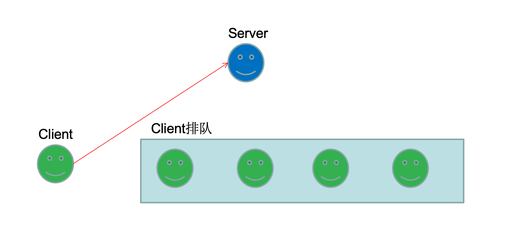
什么是多连接
多连接就是解决单连接所面临的窘境，使得多个客户端可以同时跟一个服务器进行通信。
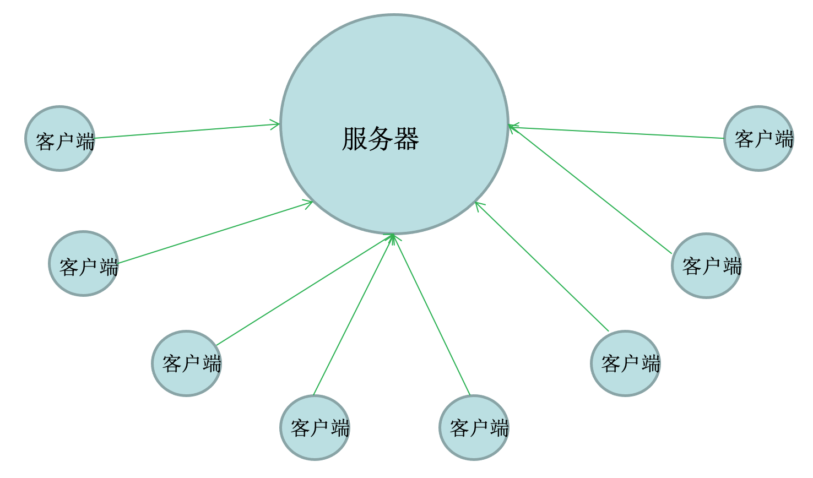
多连接所面临的问题
多连接解决了多客户端与服务器通信排队的问题，但同样也会出现新的问题，当多个客户端连接过来时，服务器应该先给谁回复？这时候就会有一个顺序逻辑的问题。

多线程解决方案
为了解决多连接所面临的问题，这时候就需要用到多线程的解决方案，为每个客户端连接开一个线程，主线程只管负责监听客户端连接请求，而真正负责通信的任务转交为工作线程。
同样一个东西总会有好也有坏，在这里多线程解决方案优点很明显，但缺点同样也很致命。
优点：整个逻辑非常清楚，编程实现及维护都相对容易；
缺点：占用系统资源太严重，客户端数量上升到一定程度，容易造成系统瘫痪（资源用光了）。
实际代码编写
学过Win32的话应该了解到当我们打开一个进程的时候，会默认启用一个线程（每个进程至少需要一个线程），那么我们可以用这个线程作为主线程，负责监听客户端连接请求，再用之前学习到的CreateThread函数创建新的工作线程负责通信（收发信息）。
DWORD WINAPI ThreadProc(LPVOID lpParameter);int main(int argc, char* argv[]){ // 0. 初始化 WORD wsVersion = MAKEWORD(2, 2); WSADATA wsaData = {0}; WSAStartup(wsVersion, &wsaData); // 1. 创建套接字 SOCKET sSocket = socket(AF_INET, SOCK_STREAM, 0); if (SOCKET_ERROR == sSocket) { printf("套接字闯创建失败!\n" ); } else { printf("套接字闯创建成功!\n" ); } // 2. 绑定套接字 sockaddr_in sockAddrInfo = {0}; // 初始化 sockAddrInfo.sin_addr.S_un.S_addr = inet_addr("127.0.0.1"); sockAddrInfo.sin_port = htons(2118); // 端口 sockAddrInfo.sin_family = AF_INET; // 地址族规范 int bRes = bind(sSocket, (sockaddr*)&sockAddrInfo, sizeof(sockAddrInfo)); if (SOCKET_ERROR == bRes) { printf("绑定失败!\n"); } else { printf("绑定成功!\n"); } // 3. 监听套接字 int lRes = listen(sSocket, 1); if (SOCKET_ERROR == lRes) { printf("监听失败!\n"); } else { printf("监听成功!\n"); } // 循环 while (true) { // 4. 等待连接 sockaddr_in acceptSockAddrInfo = {0}; // 初始化 int acceptSockAddrLen = sizeof(acceptSockAddrInfo); SOCKET aSocket = accept(sSocket, (sockaddr*)&acceptSockAddrInfo, &acceptSockAddrLen); if (INVALID_SOCKET != aSocket) { HANDLE hThread = CreateThread(NULL, NULL, ThreadProc, (LPVOID)aSocket, 0, NULL); CloseHandle(hThread); } } // 7. 关闭套接字 closesocket(sSocket); WSACleanup(); return 0;}DWORD WINAPI ThreadProc(LPVOID lpParameter) { int ret = 1; SOCKET aSocket = (SOCKET)lpParameter; char buf[100] = {0}; // 收发数据 do { ret = recv(aSocket, buf, 100, 0); if (strcmp(buf, "close") == 0) { break; } printf("Recv data: %s \n", buf); send(aSocket, buf, strlen(buf)+1, 0); memset(buf, 0, 100); } while (ret != 0); // 断开连接(被动) shutdown(aSocket, SD_BOTH); // 关闭套接字 closesocket(aSocket); return 0;}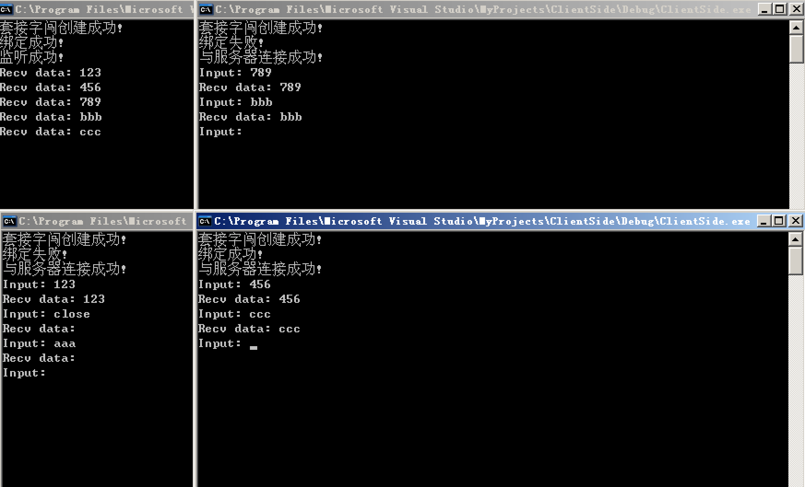
多连接之select模型
多连接需求使用多线程的方式去满足，但是同样也造成了当客户端连接数量到达一定程度，就会导致占用系统资源太过于严重，所以我们可以使用select模型解决方案处理多连接，并节省系统资源。
什么是select模型
select模型的本质
select的中文意思是选择，也就表示是从某些东西中去选择自己想要的，如下图所示，有两个地方可供我们选择，也就是可读检测池、可写检测池，在这两个池子里的是我们的套接字句柄（SOCKET）。
从字面意思理解，select可从诸多连接中检测出可读的（accpet函数），也就是有响应的连接；也可以从诸多连接中检测出可写的（recv、send函数），也就是可以发送消息的连接。

select模型逻辑
select模型逻辑步骤如下：
将所有的socket装进一个数组中
通过select函数遍历socket数组，取出有响应（可读、可写）的socket放进另一个数组
对存入有响应的socket数组处理
select函数
select模型实际上就是调用了select这个函数，其语法如下：
int select ( int nfds, // 填0 fd_set *readfds, // 输入输出共用参数，检查/输出可读的socket fd_set *writefds, // 输入输出共用参数，检查/输出可写的socket fd_set *exceptfds, // 输入输出共用参数，检查/输出socket上的异常错误 const struct timeval *timeout // struct timeval结构体，最大等待时间，当socket没有响应时，要等待的时间);该函数的作用就是检测出可读、可写的socket，它的返回值有这些：
0: 指定等待时间内没有socket响应，continue进行下一次等待大于0: 有socket响应SOCKET_ERROR(宏): 发送错误除了需要了解这个函数以外，我们可以看见其成员是一个fd_set结构体，我们还需要了解一下这个结构体和几个常用的宏。
fd_set结构体
fd_set是用来装socket的结构体，默认情况下，它可以装64个socket：
#ifndef FD_SETSIZE#define FD_SETSIZE 64#endif /* FD_SETSIZE */typedef struct fd_set { u_int fd_count; // 统计的数量 SOCKET fd_array[FD_SETSIZE]; // 存放SOCKET的数组} fd_set;如果你想装更多的socket，可以通过在winsock2.h头文件前声明宏，给一个更大的值：
#define FD_SETSIZE 128#include <WinSock2.h>select的原理就是不停的检测，越多的socket效率就越低，延迟就越大，所以说这个模型只适合小用户量去访问，应该自己选择一个合适的大小。
四个操作fd_set的操作宏
|
操作宏 |
作用 |
代码 |
|
FD_ZERO |
将客户端socket集合清零 |
FD_ZERO(&clientSockets); |
|
FD_SET |
添加一个socket(超过默认值大小不再处理) |
FD_SET(socketListen, &clientSockets); |
|
FD_CLR |
从集合中删除指定的socket一定要close，手动释放 |
FD_CLR(socketListen, &clientSockets); closesocket(socketListen); |
|
FD_ISSET |
查询socket是否在集合中，不存在返回0，存在返回非0 |
FD_ISSET(socketListen, &clientSockets); |
实际代码编写
按照select模型逻辑编写代码即可：
int main(int argc, char* argv[]){ // 0. 初始化 WORD wsVersion = MAKEWORD(2, 2); WSADATA wsaData = {0}; WSAStartup(wsVersion, &wsaData); // 1. 创建套接字 SOCKET sSocket = socket(AF_INET, SOCK_STREAM, 0); if (SOCKET_ERROR == sSocket) { printf("套接字闯创建失败!\n" ); } else { printf("套接字闯创建成功!\n" ); } // 2. 绑定套接字 sockaddr_in sockAddrInfo = {0}; // 初始化 sockAddrInfo.sin_addr.S_un.S_addr = inet_addr("127.0.0.1"); sockAddrInfo.sin_port = htons(2118); // 端口 sockAddrInfo.sin_family = AF_INET; // 地址族规范 int bRes = bind(sSocket, (sockaddr*)&sockAddrInfo, sizeof(sockAddrInfo)); if (SOCKET_ERROR == bRes) { printf("绑定失败!\n"); } else { printf("绑定成功!\n"); } // 3. 监听套接字 int lRes = listen(sSocket, 5); if (SOCKET_ERROR == lRes) { printf("监听失败!\n"); } else { printf("监听成功!\n"); } fd_set fdSocket; // 定义 FD_ZERO(&fdSocket); // 初始化 FD_SET(sSocket, &fdSocket); // 将当前服务器创建的socket放入集合中 while (true) { fd_set readfds = fdSocket; // 定义可读的集合 fd_set writefds = fdSocket; // 定义可写的集合 // fd_set exceptfds = fdSocket; // 获取select函数的返回值 int iRes = select(0, &readfds, &writefds, NULL, NULL); // 如果返回值大于0则说明不存在无响应、错误的情况，继续向下 if (iRes > 0) { // 遍历可写集合，给每个socket发送Hello for (u_int i = 0; i < writefds.fd_count; i++) { send(readfds.fd_array[i], "Hello", 6, 0); } // 遍历可读集合 for (i = 0; i < readfds.fd_count; i++) { // 如果socket为当前服务器创建的scoket则进入accept等待消息 if (readfds.fd_array[i] == sSocket) { sockaddr_in s = {0}; int l = sizeof(s); SOCKET aSocket = accept(sSocket, (sockaddr*)&s, &l); if (INVALID_SOCKET == aSocket) { continue; } FD_SET(aSocket, &fdSocket); // inet_ntoa获取IP printf("Accpet Client IP: %s \n", inet_ntoa(s.sin_addr)); // 如果不是，则进入接收消息 } else { char buf[100] = {0}; int iRecv = recv(readfds.fd_array[i], buf, sizeof(buf), 0); // 判断接收消息的返回值，大于0则表示接收成功。 if (iRecv > 0) { printf("Recv: %s \n", buf); // 否则就关闭连接、关闭套接字 } else { SOCKET tSocket = readfds.fd_array[i]; FD_CLR(tSocket, &fdSocket); shutdown(tSocket, SD_BOTH); closesocket(tSocket); } } } } else { continue; } } closesocket(sSocket); WSACleanup(); return 0;}
遍历物理网卡
如果你要抓网络的包，首先你要知道你要处理的是哪个网卡，那么你就要知道这个网卡的相关信息，所以本章节就遍历物理网卡并获取相关信息。
我们都知道在Windows操作系统上，我们没有办法直接去操作硬件层的东西，因为这就涉及到驱动内核了，我们想要去用的话就需要通过Windows系统封装好的库，在这里我们使用到的就WinPcap库。
WinPcap介绍
WinPcap(Windows Packet Capture)是Windows平台下一个免费的、公共的库。开发WinPcap这个项目的目的在于为Win32 App提供访问网络底层的能力。
常用功能
WinPcap常用的功能如下所示：
捕获原始数据包，无论它是发往某台机器的，还是在其他设备(共享媒介)上进行交换的；
在数据包发送给某应用程序前，根据用户指定的规则过滤数据包；
将原始数据包通过网络发送出去；
收集并统计网络流量信息。
下载与配置
WinPcap库并不是Windows系统自带的，而是由外部开发者去维护的，我们可以从这个地址去下载：https://www.winpcap.org/archive/4.0.1-WpdPack.zip，如果你是基于VC6去使用的话，选择>=4.0.1的版本。
下载下来之后是一个压缩包，主要的就是Lib和Include这两个文件夹：
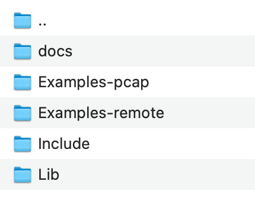
将这两个文件夹存放好，在VC6中打开Tools-Options，填入两个文件夹所在路径：

实际代码编写
接下来我们就要使用这个扩展库去遍历获取物理网卡的相关信息，首先我们需要包含头文件和库文件：
#include <WINSOCK2.H>#include <pcap.h>#pragma comment(lib, "ws2_32.lib")#pragma comment(lib, "wpcap.lib")接着我们需要通过封装好的函数pcap_findalldevs去获取物理网卡信息，其语法如下（参考官方手册：https://www.winpcap.org/docs/docs_412/html/）：
int pcap_findalldevs ( pcap_if_t ** alldevsp, // 输出参数，这是一个二级指针，它实际上是一个链表 char * errbuf // 输出参数，执行失败的错误信息存放的缓冲区); // 执行成功返回0，失败返回-1如下图所示就是这个结构体，我们可以看出，实际上他是有俩个成员都是链表，一个是每个网卡对应的next成员指针，一个是每个网卡对应的addresses成员指针的next成员：
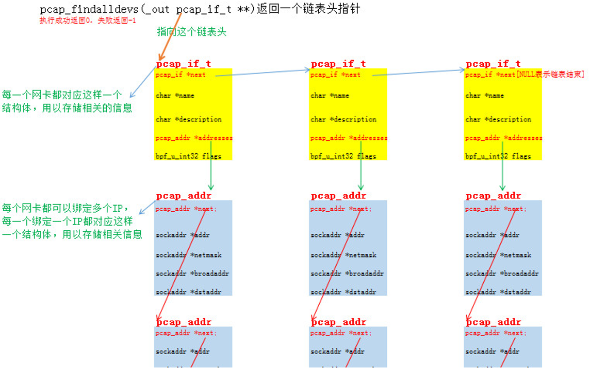
那么我们可以根据这个结构去获取网卡的信息：
int main(int argc, char* argv[]){ pcap_if_t* alldevsp = NULL; pcap_if_t* tmpdevsp = NULL; char errbuf[PCAP_ERRBUF_SIZE] = {0}; // 错误信息 int iRet = pcap_findalldevs(&alldevsp, errbuf); // 获取返回值 if (iRet == 0) { // 判断是否为0 tmpdevsp = alldevsp; // 遍历网卡 do { printf("Name: %s\nDesc: %s\n", tmpdevsp->name, tmpdevsp->description); pcap_addr* tmpaddr = tmpdevsp->addresses; // 遍历地址 do { sockaddr_in* ipaddr = (sockaddr_in*)tmpaddr->addr; printf("IP: %s\n", inet_ntoa(ipaddr->sin_addr)); } while (tmpaddr = tmpaddr->next); printf("===================================\n\n"); } while (tmpdevsp = tmpdevsp->next); } else { printf("pcap_findalldevs error: %s \n", errbuf); } pcap_freealldevs(alldevsp); // 释放资源 return 0;}原始数据包的获取与打印
原始数据包就是适配器（物理网卡、虚拟网卡都可以称为适配器）接收到，没有经过任何处理的包。
获取适配器上的数据包
获取适配器上的数据包， 一共有如下几个步骤：
1. 遍历适配器，找到需要捕获的适配器(pcap_findalldevs函数)2. 打开指定的适配器(pcap_open函数)3. 关闭适配器，释放资源(pcap_freealldevs函数)4. 设置回调函数开始捕获数据包(pcap_loop函数)5. 编写回调函数进行数据的接收与处理pcap_open函数语法：
pcap_t* pcap_open( const char *source, // 要打开的适配器名字 int snaplen, // 捕获包的长度（TCP包的最大长度是1460字节，UDP包则是65535字节） int flags, // 这里就是设置你的适配器模式，我们需要抓包的话就要设置成混合模式，写1或者true都可以 int read_timeout, // 读取超时时间，这里可以直接写NULL，不管它 struct pcap_rmtauth *auth, // 认证，pcap_open char *errbuf // 错误信息);pcap_loop函数语法：
int pcap_loop( pcap_t *, // pcap_open返回的指针 int, // 填0 pcap_handler, // 回调函数 u_char * // 填NULL);int pcap_loop ( pcap_t * p, // pcap_open返回的指针 int cnt, // 填0 pcap_handler callback, // 回调函数 u_char * user // 用户自定义内容); 回调函数原型：
typedef void(* pcap_handler)(u_char *user, const struct pcap_pkthdr *pkt_header, const u_char *pkt_data)void pcap_handler( u_char *user, // 用户定义的参数，包含了捕获会话的状态，它对应于 pcap_dispatch 和 pcap_loop 函数的user参数 const struct pcap_pkthdr *pkt_header, // 结构体指针，捕获驱动与数据包相关联的头（不是协议头） const u_char *pkt_data // 指针，指向数据包的数据，包括协议头。);这里面有一个结构体，我们需要要看一下它的成员分别是什么：
struct pcap_pkthdr { struct timeval ts; // 数据包捕获的时间戳 bpf_u_int32 caplen; // 捕获到包的长度 bpf_u_int32 len; // 这个包的长度};第一个成员是一个结构体timeval，自行了解，这里不再赘述，第二与第三个成员，理论应该是一样的大小，但有可能捕获到数据包的长度与实际的长度有出入（数据丢失）。
适配器的混合模式
通常，适配器(物理网卡)有多种工作模式，设置为混合模式之后，可以接收所有流经当前网卡的数据包，即使不是发给自己的。
实际代码编写
在实际编写代码之前，我们是要在包含pcap.h头文件之前定一个宏：
#define HAVE_REMOTE#include <WINSOCK2.H>#include <pcap.h>#pragma comment(lib, "ws2_32.lib")#pragma comment(lib, "wpcap.lib")这是因为我们即将要使用到pcap_open这个函数，只有定义了这个宏，才能包含定义了这个函数的头文件，这个我们可以从pcap.h头文件中看到：
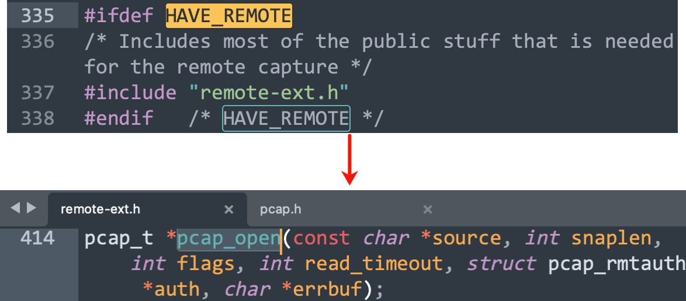
接着，我们就按照顺序逐步去编写代码即可：
void Mypcap_handler(u_char *user, const struct pcap_pkthdr *pkt_header, const u_char *pkt_data);int main(int argc, char* argv[]){ pcap_if_t* alldevsp = NULL; pcap_if_t* tmpdevsp = NULL; char errbuf[PCAP_ERRBUF_SIZE] = {0}; // 错误信息 // 1. 遍历适配器 int iRet = pcap_findalldevs(&alldevsp, errbuf); // 获取返回值 if (iRet != 0) { printf("pcap_findalldevs error: %s \n", errbuf); } tmpdevsp = alldevsp; do { printf("Name: %s \nDesc: %s \n================\n\n", tmpdevsp->name, tmpdevsp->description); } while (tmpdevsp = tmpdevsp->next); // 2. 打开指定的适配器 pcap_t* pcap = pcap_open("\\Device\\NPF_{C7C05FAA-6043-4EB3-9059-329655AC6FB0}", 65535, 1, NULL, NULL, errbuf); if (!pcap) { printf("pcap_open error: %s \n", errbuf); } // 3. 关闭适配器 pcap_freealldevs(alldevsp); // 4. 捕获数据包 pcap_loop(pcap, 0, Mypcap_handler, NULL); return 0;}void Mypcap_handler(u_char *user, const struct pcap_pkthdr *pkt_header, const u_char *pkt_data) { // 5. 编写回调函数 struct tm *ltime; char timestr[16] = {0}; time_t local_tv_sec; // 将时间戳转换成可识别的格式 local_tv_sec = pkt_header->ts.tv_sec; ltime = localtime(&local_tv_sec); strftime(timestr, sizeof timestr, "%H:%M:%S", ltime); printf("Time: %s, Caplen: %d, Len: %d \n", timestr, pkt_header->caplen, pkt_header->len); // 根据分析，我们发现数据包的前六个字节为目地的MAC地址，第七个字节到第12个字节则为源的MAC地址，所以在这里输出 u_char dstMac[6] = {0}; for(int i = 0; i < 6; i++) { dstMac[i] = *(pkt_data+i+0); } printf("Dst Mac: %02x:%02x:%02x:%02x:%02x:%02x \n", dstMac[0], dstMac[1], dstMac[2], dstMac[3], dstMac[4], dstMac[5]); u_char srcMac[6] = {0}; for(i = 0; i < 6; i++) { srcMac[i] = *(pkt_data+i+6); } printf("Src Mac: %02x:%02x:%02x:%02x:%02x:%02x \n", srcMac[0], srcMac[1], srcMac[2], srcMac[3], srcMac[4], srcMac[5]); // pkt_data 给的是存储数据的内存首地址，我们根据实际捕获的长度去遍历即可获取完整数据 printf("\nData:\n------------------------\n"); for(i = 0; i < pkt_header->caplen; i++) { printf("%x", pkt_data[i]); } printf("\n------------------------\n");}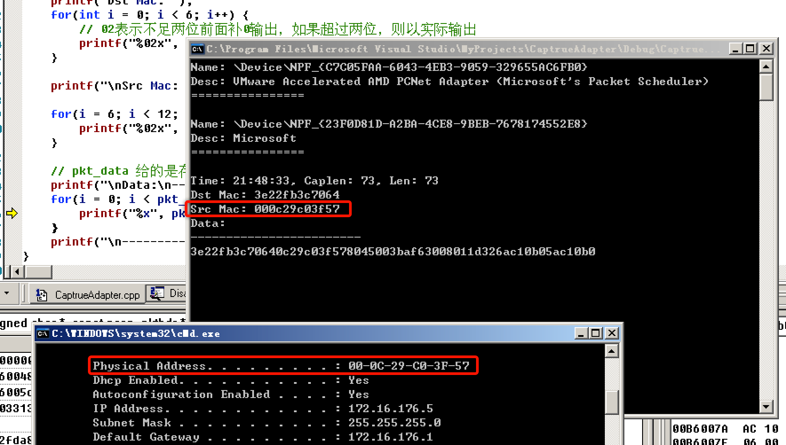
MAC帧结构与MAC包的解析
MAC帧结构
在上一章中，我们用代码分别输出了原始数据包中的目标主机的MAC地址和源主机的MAC地址，这分别占6字节，还有2字节表示类型，加起来就是14字节，我们称之为MAC帧结构：

MAC层是数据链路层的两个子层之一，如上图中的这2个字节则表示当前数据包属于哪一种网络层协议的类型（例如：IP、ARP）。
我们可以通过获取适配器上的原始数据包，在最开始的位置找到MAC帧结构，这是因为我们可以直接从网络模型看出网络协议的层级，这种数据包应该是按照层级一层一层的追加的，所以MAC帧结构应该在最开始的位置。
Wireshark抓包解析
我们可以通过Wireshark去抓包，随便选择一个包展开就可以看到这样的一个结构：
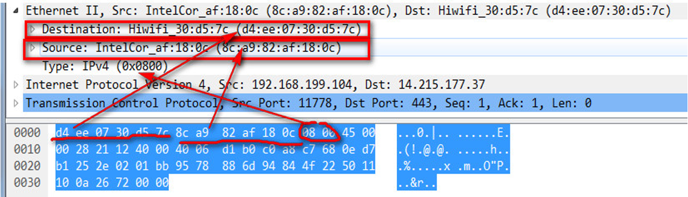
IP帧结构与IP包的解析
接下来我们需要定位IP帧结构， 而我们想定位这个结构的话，按照网络协议的层级应该先从MAC帧说起：

如上图所示，我们的IP帧就在其他数据中，我们根据MAC帧的最后2字节推断出其他数据中的帧对应什么帧。
IP帧结构
如下图就是IP帧结构，图中多次出现的位，表示的是BIT位：
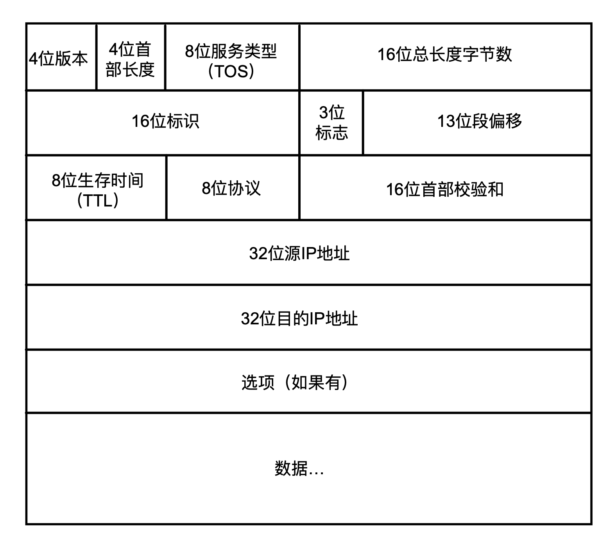
其分别表示如下：
版本：版本占了4位，用来表示该协议采用的是那一个版本的IP，相同版本的IP才能进行通信，一般此处的值为4，表示IPv4；
首部头长度：该字段用四位表示，表示整个IP报文的头的长度，这里的长度表示有多少个单位，1个单位是4字节，如长度为1则表示该IP报文的头大小为4字节；它得范围即二进制数0000-1111（十进制数0-15），其中一个最小长度为0字节，最大长度为60字节，一般来说此处的值为0101，表示头长度为20字节；
服务类型（TOS）：该字段用8位表示，该字段一般情况下不使用；
总长度字节数：该字段表示整个IP报文的长度，这里的长度也表示有多少个单位，1个单位是1字节，能表示的最大字节为2^16-1=65535字节，不过由于链路层的MTU限制，超过1480字节后就会被分段（以太帧MTU为1500的情况下，除去20字节的包头）；
标识：该字段是IP软件实现的时候自动产生的，该字段的目的不是为了接受方的按序接受而设置的，而是在IP分段以后，用来标识同一段分段的，方便IP分段的重组；
标志：该字段是与IP分段有关的，其中有三位，但只有两位是有效的，分别为MF、DF、MF；MF表示后面是否还有分段，为1时，表示后面还有分段；DF表示是否能分段，为0表示可以分段；
段偏移：该字段是与IP分段后，相应的IP段在总的IP段的位置；
生存时间（TTL）：该字段表示生存周期，该值占8位，IP分段每经过一个路由器该值减一，它的出现是为了防止路由环路，浪费带宽的问题，Window系统默认为128；
协议：该值表示上层的协议，占8位，其中1表示ICMP、2表示IGMP、6表示TCP、17表示UDP、89表示OSPF；
首部校验和：该值是对整个数据包的包头进行的校验，占16位；
源地址和目的地址：表示发送IP段的源和目的IP，分别占32位；
可选的部分：一些特殊的要求会加在这个部分，一般情况下是不会有这个字段的；
数据。
大概了解一下即可，我们主要关注几个重要字段：
版本
首部长度
总长度
协议
源IP
目的IP
注意：网络传输的字节序和你主机本身的字节序是不一样的，所以在转换的时候需要注意一下。
Wireshark抓包解析
我们可以通过Wireshark去抓包，随便选择一个包展开就可以看到这样的一个结构 ：

同样，我们可以根据对应的位，编写程序去解析。
实际代码编写
实际编写代码如下，在编写代码的过程中不要忘记偏移量+14再获取IP报文的信息：
void Mypcap_handler(u_char *user, const struct pcap_pkthdr *pkt_header, const u_char *pkt_data);int main(int argc, char* argv[]){ pcap_if_t* alldevsp = NULL; pcap_if_t* tmpdevsp = NULL; char errbuf[PCAP_ERRBUF_SIZE] = {0}; // 错误信息 // 1. 遍历适配器 int iRet = pcap_findalldevs(&alldevsp, errbuf); // 获取返回值 if (iRet != 0) { printf("pcap_findalldevs error: %s \n", errbuf); } tmpdevsp = alldevsp; do { printf("Name: %s \nDesc: %s \n================\n\n", tmpdevsp->name, tmpdevsp->description); } while (tmpdevsp = tmpdevsp->next); // 2. 打开指定的适配器 pcap_t* pcap = pcap_open("\\Device\\NPF_{C7C05FAA-6043-4EB3-9059-329655AC6FB0}", 65535, 1, NULL, NULL, errbuf); if (!pcap) { printf("pcap_open error: %s \n", errbuf); } // 3. 关闭适配器 pcap_freealldevs(alldevsp); // 4. 捕获数据包 pcap_loop(pcap, 0, Mypcap_handler, NULL); return 0;}char* MyStrCpy(char* oStr, int index, int number) { char* tmpStr = oStr; char* resStr = (char*)malloc(number); for (int i = 0; i < number; i++) { *(resStr+i) = *(tmpStr+(index+i)); } return resStr;}void Mypcap_handler(u_char *user, const struct pcap_pkthdr *pkt_header, const u_char *pkt_data) { // 5. 编写回调函数 struct tm *ltime; char timestr[16] = {0}; time_t local_tv_sec; // 将时间戳转换成可识别的格式 local_tv_sec = pkt_header->ts.tv_sec; ltime = localtime(&local_tv_sec); strftime(timestr, sizeof timestr, "%H:%M:%S", ltime); printf("Time: %s, Caplen: %d, Len: %d \n", timestr, pkt_header->caplen, pkt_header->len); printf("================MAC================\n"); u_char dstMac[6] = {0}; for(int i = 0; i < 6; i++) { dstMac[i] = *(pkt_data+i+0); } printf("Dst Mac: %02x:%02x:%02x:%02x:%02x:%02x \n", dstMac[0], dstMac[1], dstMac[2], dstMac[3], dstMac[4], dstMac[5]); u_char srcMac[6] = {0}; for(i = 0; i < 6; i++) { srcMac[i] = *(pkt_data+i+6); } printf("Src Mac: %02x:%02x:%02x:%02x:%02x:%02x \n", srcMac[0], srcMac[1], srcMac[2], srcMac[3], srcMac[4], srcMac[5]); u_char type[2] = {0}; for(i = 0; i < 2; i++) { type[i] = *(pkt_data+i+12); } printf("Type: "); if (type[0] == 0x08) { if (type[1] == 0x00) { printf("IPv4\n"); printf("\n================IP================\n"); u_char versionAndHeaderLen = *(pkt_data+14); u_char version = versionAndHeaderLen >> 4; // 版本 u_char headerLen = versionAndHeaderLen << 4; headerLen = headerLen >> 4; // 首部长度 u_char realHeaderLen = headerLen * 4; if (version == 0x04) { printf("Version: IPv4 \n"); } printf("HeaderLen: %d(%d Byte) \n", headerLen, realHeaderLen); u_char allLen[2] = {0}; for (i = 0; i < 2; i++) { allLen[i] = *(pkt_data+i+14+2); } // 手动字节序的转换 u_short resLen = 0; u_char* tmpLen = (u_char*)&resLen; tmpLen[0] = allLen[1]; tmpLen[1] = allLen[0]; // 基于函数转换 // u_short resLen = ntohs(*((u_short*)allLen)); printf("AllLen: %d Byte \n", resLen); u_char protocol = *(pkt_data+14+9); switch (protocol) { case 1: printf("Protocol: ICMP \n"); break; case 2: printf("Protocol: IGMP \n"); break; case 6: printf("Protocol: TCP \n"); break; case 17: printf("Protocol: UDP \n"); break; case 89: printf("Protocol: OSPF \n"); break; } u_char srcIP[4] = {0}; for (i = 0; i < 4; i++) { srcIP[i] = *(pkt_data+i+14+12); } printf("Src IP: %d.%d.%d.%d\n", srcIP[0], srcIP[1], srcIP[2], srcIP[3]); u_char dstIP[4] = {0}; for (i = 0; i < 4; i++) { dstIP[i] = *(pkt_data+i+14+16); } printf("Dst IP: %d.%d.%d.%d \n", dstIP[0], dstIP[1], dstIP[2], dstIP[3]); printf("\n================IP================\n\n"); } else if (type[1] == 0x06) { printf("ARP\n"); } }}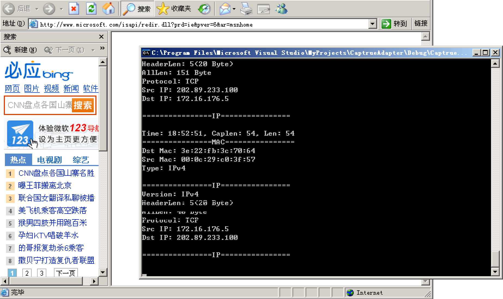
TCP帧结构与TCP包的解析
我们去了解IP包的时候，是从MAC包出发的，那么同样我们了解TCP包也需要去从IP包出发，首先我们知道整个整个IP包包含的数据中就有TCP/UDP包，想知道这个数据是属于什么协议，就要通过IP帧结构的协议字段，想要知道TCP/UDP包数据的大小，就要通过总长度减去首部长度获取。
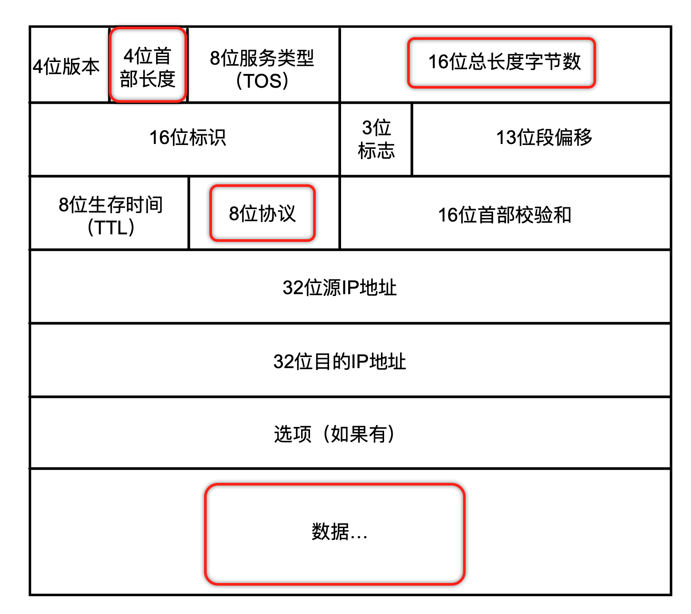
TCP帧结构
TCP帧结构如下图所示：

这里出现了很多，我们没有见过的词，我们来了解一下几个常用的：
源端口：发送方应用程序对应的端口；
目的端口：接收方应用程序对应的端口；
序列号： 这个我们已经在之前了解过了，就是我们所说的seq；
确认号： 这个我们也了解过了，就是我们所说的ack；
偏移：这个就类似于我们IP帧结构中的首部长度，1个单位4字节；
窗口：接收窗口的大小，表示接收端希望接受的字节数。
对抓包来说比较重要的字段如下：
源端口
目的端口
偏移
Wireshark抓包分析
我们可以通过Wireshark去抓包，随便选择一个包展开就可以看到这样的一个结构 ：

实际代码编写
int main(int argc, char* argv[]){ pcap_if_t* alldevsp = NULL; pcap_if_t* tmpdevsp = NULL; char errbuf[PCAP_ERRBUF_SIZE] = {0}; // 错误信息 // 1. 遍历适配器 int iRet = pcap_findalldevs(&alldevsp, errbuf); // 获取返回值 if (iRet != 0) { printf("pcap_findalldevs error: %s \n", errbuf); } tmpdevsp = alldevsp; do { printf("Name: %s \nDesc: %s \n================\n\n", tmpdevsp->name, tmpdevsp->description); } while (tmpdevsp = tmpdevsp->next); // 2. 打开指定的适配器 pcap_t* pcap = pcap_open("\\Device\\NPF_{C7C05FAA-6043-4EB3-9059-329655AC6FB0}", 65535, 1, NULL, NULL, errbuf); if (!pcap) { printf("pcap_open error: %s \n", errbuf); } // 3. 关闭适配器 pcap_freealldevs(alldevsp); // 4. 捕获数据包 pcap_loop(pcap, 0, Mypcap_handler, NULL); return 0;}char* MyStrCpy(char* oStr, int index, int number) { char* tmpStr = oStr; char* resStr = (char*)malloc(number); for (int i = 0; i < number; i++) { *(resStr+i) = *(tmpStr+(index+i)); } return resStr;}void Mypcap_handler(u_char *user, const struct pcap_pkthdr *pkt_header, const u_char *pkt_data) { // 5. 编写回调函数 struct tm *ltime; char timestr[16] = {0}; time_t local_tv_sec; // 将时间戳转换成可识别的格式 local_tv_sec = pkt_header->ts.tv_sec; ltime = localtime(&local_tv_sec); strftime(timestr, sizeof timestr, "%H:%M:%S", ltime); printf("Time: %s, Caplen: %d, Len: %d \n", timestr, pkt_header->caplen, pkt_header->len); printf("================MAC================\n"); u_char dstMac[6] = {0}; for(int i = 0; i < 6; i++) { dstMac[i] = *(pkt_data+i+0); } printf("Dst Mac: %02x:%02x:%02x:%02x:%02x:%02x \n", dstMac[0], dstMac[1], dstMac[2], dstMac[3], dstMac[4], dstMac[5]); u_char srcMac[6] = {0}; for(i = 0; i < 6; i++) { srcMac[i] = *(pkt_data+i+6); } printf("Src Mac: %02x:%02x:%02x:%02x:%02x:%02x \n", srcMac[0], srcMac[1], srcMac[2], srcMac[3], srcMac[4], srcMac[5]); u_char type[2] = {0}; for(i = 0; i < 2; i++) { type[i] = *(pkt_data+i+12); } printf("Type: "); if (type[0] == 0x08) { if (type[1] == 0x00) { printf("IPv4\n"); printf("\n================IP================\n"); u_char versionAndHeaderLen = *(pkt_data+14); u_char version = versionAndHeaderLen >> 4; // 版本 u_char headerLen = versionAndHeaderLen << 4; headerLen = headerLen >> 4; // 首部长度 u_char realHeaderLen = headerLen * 4; if (version == 0x04) { printf("Version: IPv4 \n"); } printf("HeaderLen: %d(%d Byte) \n", headerLen, realHeaderLen); u_char allLen[2] = {0}; for (i = 0; i < 2; i++) { allLen[i] = *(pkt_data+i+14+2); } u_short resLen = ntohs(*((u_short*)allLen)); printf("AllLen: %d Byte \n", resLen); u_char protocol = *(pkt_data+14+9); switch (protocol) { case 1: printf("Protocol: ICMP \n"); break; case 2: printf("Protocol: IGMP \n"); break; case 6: printf("Protocol: TCP \n"); break; case 17: printf("Protocol: UDP \n"); break; case 89: printf("Protocol: OSPF \n"); break; } u_char srcIP[4] = {0}; for (i = 0; i < 4; i++) { srcIP[i] = *(pkt_data+i+14+12); } printf("Src IP: %d.%d.%d.%d\n", srcIP[0], srcIP[1], srcIP[2], srcIP[3]); u_char dstIP[4] = {0}; for (i = 0; i < 4; i++) { dstIP[i] = *(pkt_data+i+14+16); } printf("Dst IP: %d.%d.%d.%d \n", dstIP[0], dstIP[1], dstIP[2], dstIP[3]); printf("\n================IP================\n\n"); if (protocol == 6) { printf("================TCP================\n"); u_char srcPort[2] = {0}; for (int x = 0; x < 2; x++) { srcPort[x] = *(pkt_data+14+realHeaderLen+x); } u_short resSrcPort = ntohs(*(u_short*)srcPort); printf("Src Port: %d \n", resSrcPort); u_char dstPort[2] = {0}; for (x = 0; x < 2; x++) { dstPort[x] = *(pkt_data+14+realHeaderLen+x); } u_short resDstPort = ntohs(*(u_short*)dstPort); printf("Dst Port: %d \n", resDstPort); u_char offsetAndReserved = *(pkt_data+14+realHeaderLen+12); u_char offset = offsetAndReserved >> 4; printf("Offset: %d\n", offset); printf("================TCP================\n"); } } else if (type[1] == 0x06) { printf("ARP\n"); } }}
模仿360/QQ管家获取网速
我们都用过360或者QQ管家，它一般会有个悬浮的窗口，然后实时的显示当前的上下行网速，我们就通过学习的知识来实现这个功能。
网速的定义
一段时间内下载数据的大小除以持续时长就是网速：speed = len / time
那么如上公式中的下载数据的大小和持续时长如何获取呢？那就是通过之前所学习的回调函数的pcap_pkthdr结构体来获取。
实际代码编写
void Mypcap_handler(u_char *user, const struct pcap_pkthdr *pkt_header, const u_char *pkt_data) { // 5. 编写回调函数 // 初始化开始时间和结束时间 // 这里使用static关键词是为了避免重复初始化 static timeval tBegin, tEnd = {0}; // 初始化数据长度 static DWORD dataLen = 0; // 结束时间为抓包时间 tEnd = pkt_header->ts; // 数据长度递增 dataLen += pkt_header->caplen; // 计算得出开始时间减去结束时间 DWORD fTime = tEnd.tv_sec - tBegin.tv_sec + (tEnd.tv_usec - tBegin.tv_usec) / 1000000; // 当时间大于1秒时，计算网速 if (fTime > 1){ float speed = dataLen / fTime; printf("Speed: %f K/S \n", speed/1024); // 将开始时间移到结束时间，提供下一次计算 tBegin = tEnd; // 初始化数据 dataLen = 0; }}
RSA加密的基本原理
为什么需要加密
网络上传输的数据很容易被抓包，如果不加密，网络数据就很容易窃取，诸如用户名、密码这些敏感的信息一旦丢失，将会造成巨大的损失。
常用的加密方式
对称加密：加密方和解密方使用同一个密钥；优点：加密解密过程简单，高效；缺点：有一方泄密了，则整个加密就失去了意义。
非对称加密：加密方和解密方使用不同的密钥；优点：解密的秘钥无法用加密的密钥来解密，即使加密方暴露出了密钥也没事，因为这个密钥只能加密，而无法解密，所以就提高了安全性；缺点：效率比较低下，过程比较繁琐。
RSA就属于非对称加密，也就是我们本章节所学的。
辅助概念
质数：是指在大于1的自然数中，除了1和它本身以外不再有其他因数的自然数。
互为质数：一般指互质数，互质数为数学中的一种概念，即两个或多个整数的公因数只有1的非零自然数。公因数只有1的两个非零自然数，叫做互质数。
RSA加密密钥的获取
RSA加密密钥获取步骤如下所示：
随机选取两个数p、q（满足互质数条件）；
按照公式获取公开模数：n = p * q，它的二进制位就是密钥长度；
按照公式获取：g = f(p,q) = (p-1)*(q-1)；
在1和g之间任意一个随机整数e（公开指数，满足1<e<g）；
由 e*d mod g = 1 关系式推导出来d（私有指数）
公开密钥 = (e, n) 用来加密
私有密钥 = (d, n) 用来解密
RSA加密解密算法
设M为需要加密的明文数据，加密算法为：Encrypt_Message = M^e mod n
设D为需要解密的密文数据，解密算法为：Decrypt_Message = D^d mod n
过程可以借助RSA-Tool和Big Integer Calculator工具。
RSA库的使用
我们需要借助RSA库在代码上实现加密与解密，这个库是OPENSSL。
安装与配置
如果你去官方下载的话是下载到的源码，需要自己去编译打包，和WinPcap库一样，将对应路径填写到VC6的配置中去：
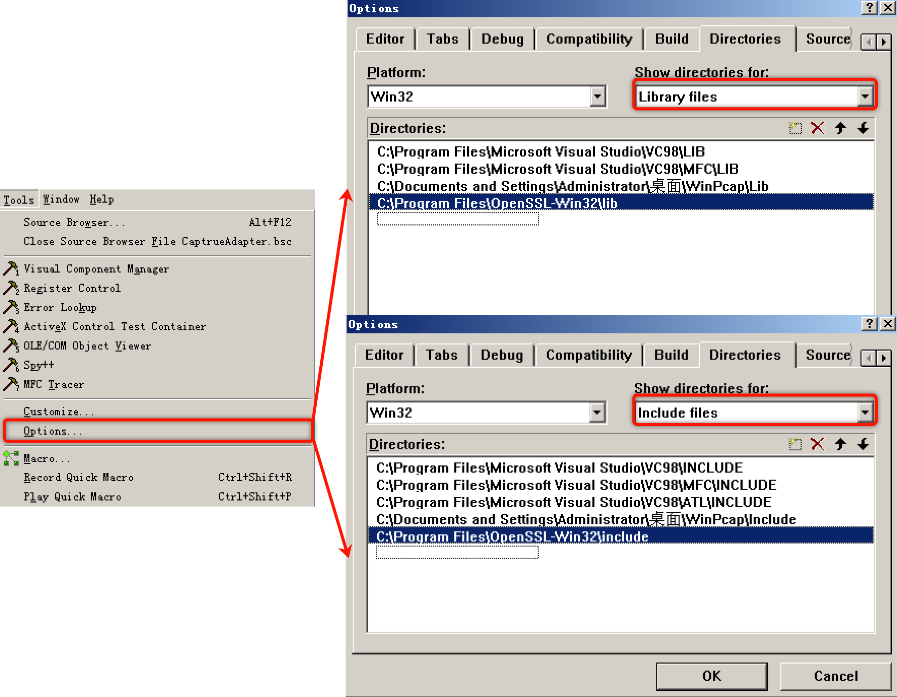
RSA库之RSA结构体及API
RSA结构体如下：
struct RSA{ BIGNUM *n; // public modulus BIGNUM *e; // public exponent BIGNUM *d; // private exponent BIGNUM *p; // secret prime factor BIGNUM *q; // secret prime factor BIGNUM *dmp1; // d mod (p-1) BIGNUM *dmq1; // d mod (q-1) BIGNUM *iqmp; // q^-1 mod p // ...};其对应的API：
// 初始化一个RSA结构RSA * RSA_new(void); // 释放一个RSA结构void RSA_free(RSA *rsa);RSA库之BIGNUM及API
BIGNUM结构体如下：
typedef struct bignum_st BIGNUM;struct bignum_st { BN_ULONG *d; /* Pointer to an array of 'BN_BITS2' bit chunks. */ int top; /* Index of last used d +1. */ /* The next are internal book keeping for bn_expand. */ int dmax; /* Size of the d array. */ int neg; /* one if the number is negative */ int flags;};其对应的API：
// 新生成一个BIGNUM结构BIGNUM *BN_new(void); // 释放一个BIGNUM结构void BN_free(BIGNUM *a);// 将16进制字符串转成大数int BN_hex2bn(BIGNUM **a, const char *str);RSA库之加密解密函数
公钥加密函数
int RSA_public_encrypt( int flen, // 要加密信息长度 unsigned char *from, // 要加密信息 unsigned char *to, // 输出参数，加密后的信息 RSA *rsa, int padding // 采取的加密方案, 分为: RSA_PKCS1_PADDING、RSA_PKCS1_OAEP_PADDING、RSA_SSLV23_PADDING、RSA_NO_PADDING );私钥解密函数
int RSA_private_decrypt( int flen, // 要解密的信息长度 unsigned char *from, // 要解密的信息 unsigned char *to, // 输出参数，解密后的信息 RSA *rsa, int padding // 采取的解密方案，分为：RSA_PKCS1_PADDING、RSA_PKCS1_OAEP_PADDING、RSA_SSLV23_PADDING、RSA_NO_PADDING);实际代码编写
首先我们需要包含一个头文件和两个库文件：
#include <openssl/rsa.h>#pragma comment(lib, "libeay32.lib")#pragma comment(lib, "ssleay32.lib")然后就是定义E、D、N，这个我们根据RSA-Tool生成的填写进去即可：
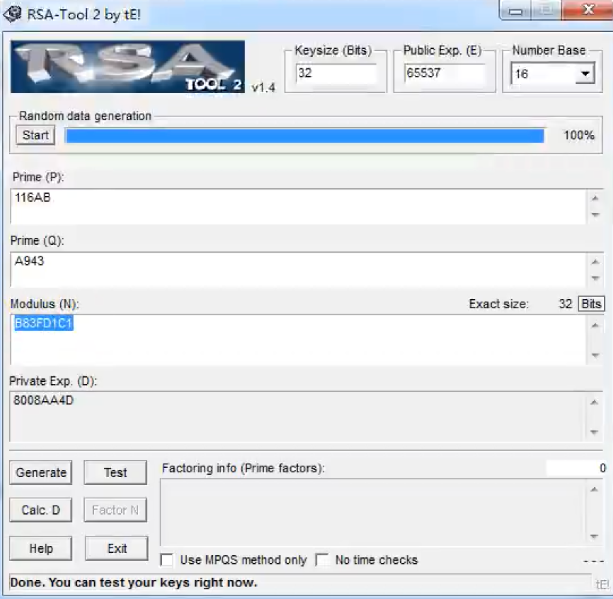
#define E "10001"#define D "8008AA4D"#define N "B83FD1C1"接着就是写自己的加密函数，解密函数同理可得：
void MyRSAEncrypt(const unsigned char* pOrgData, int dataLen, unsigned char* pEncryptBuf) { // 初始化一个RSA结构 RSA *pRsa = RSA_new(); // 初始化BIGNUM结构 BIGNUM* pbn_e = BN_new(); BIGNUM* pbn_n = BN_new(); // 将16进制字符串转成大数 BN_hex2bn(&pbn_e, E); BN_hex2bn(&pbn_n, N); // RSA结构成员赋值 pRsa->e = pbn_e; pRsa->n = pbn_n; // 公钥加密函数 int iRet = RSA_public_encrypt(dataLen, pOrgData, pEncryptBuf, pRsa, RSA_NO_PADDING); if (iRet == -1) { printf("RSA_public_encrypt Error!\n"); } // 释放BIGNUM结构 BN_free(pbn_e); BN_free(pbn_n); // 释放RSA结构 RSA_free(pRsa);}